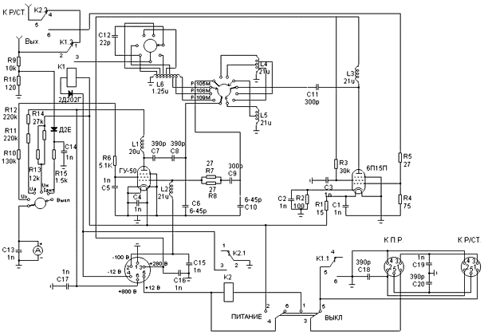
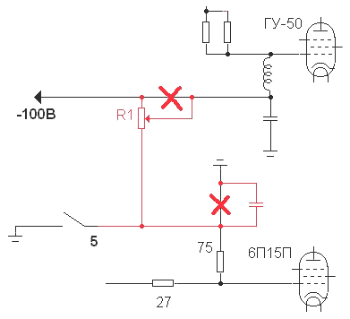
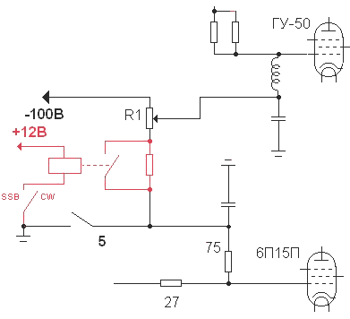

Модернизируем УМ-3 на любительские диапазоны.
УМ-3 для начинающего радиолюбителя - вещь весьма полезная. Его выходная мощность - около 50 ватт, и он очень надежен в эксплуатации. Однако, для практической работы в составе любительской радиостанции усилитель требует некоторой модернизации. Автор этой статьи использовал модернизированный УМ-3 для работы CW, SSB, FM, RTTY и SSTV в диапазонах от 10 до 20 метров как с радиостанцией Р-108М, так и с трансивером собственной конструкции.
Схема усилителя мощности "УМ-3"
Питание
Для питания УМ-3 можно использовать штатный преобразователь БП-150, но учтите, что при полной выходной мощности усилителя он потребляет очень большой ток - 12 ампер при напряжении 12 вольт . Это удобно в ситуации, когда под руками есть автомобильный аккумулятор, но совсем неудобно дома при повседневной работе в эфире. В этом случае предпочтительней собрать сетевой блок питания или использовать готовый.
Если не удастся найти ответную часть к разъему,
по которому в УМ-3 подается питание, то можно
заменить его на любой подходящий, например - 19-ти
контактный 2РМД27КПН19Г (как сделал автор). Вот
распайка для него:
|
Напряжение |
Номер |
Номер |
|
+280 |
1 |
3 |
|
0(корпус) |
3 |
1 |
|
(-12В)* |
8 |
4 |
|
-100В |
12 |
2 |
|
+12В |
17 |
5 |
|
+800В |
19 |
6 |
*Контакт 8 соединяется с корпусом при переключении всех реле и может служить как сигнал подтверждения коммутации.
Коммутация
Если вы эксплуатируете УМ-3 в штатном режиме (с БП-150 и Р-105/Р-109/Р-108), то проблем не будет. При эксплуатации совместно с другими радиостанциями можно использовать только контакт 1 разъема "К ПР." Для перевода УМ-3 в режим передачи его нужно соединить с корпусом. При использовании нестандартного блока питания неплохо было бы при приеме отключать анодное напряжение с ламп (как сделано в БП-150), или запирать их. Более предпочтителен второй вариант. Чтобы сигнал был линейным, нужно изменить режим лампы ГУ-50. Для этого на управляющую сетку нужно подать -42В вместо -100В. Самый простой способ это сделать - установить переменный резистор (20 - 100 кОм) и конденсатор (около 1000 пФ) так, как показано на рис.1 (красным выделены изменения). Попутно решается проблема с запиранием ламп в режиме приема.

Рис.1
Реле, контакты которого изображены на рис.1, находится рядом с правой стенкой УМа.
Резистор удобнее всего разместить рядом с лампой ГУ-50 и разъемом питания, а конденсатор - рядом с лампой 6П15П и реле. Необходимо проследить, чтобы дополнительные провода находились как можно дальше от анодных цепей.
Теперь в режиме приема обе лампы будут заперты. Чтобы включить передачу, нужно соединить вывод 1 разъема "К П.Р." с корпусом.
Настройка сводится к установке резистором R1 тока покоя. Внимание! Перед началом настройки резистор R1 нужно установить в верхнее по схеме положение. Для CW или FM ток покоя должен быть около 5 мА, для SSB - около 25 мА (больше не надо - линейность не страдает). Если величина тока покоя превысит 25 мА, то УМ-3 станет склонным к самовозбуждению.
Для оперативного переключения режимов можно собрать схему, показанную на на рис.2.

Рис.2
Усилитель УМ-3 можно использовать и за
пределами штатного диапазона частот, а также для
других видов модуляции. Перестроить УМ-3 на 20
метровый диапазон (можно и на другие, но я не
пробовал) на редкость просто. Для этого нужно
установить всего два дополнительных
конденсатора, подключив их следующим образом.
Первый конденсатор - 120пФ - параллельно
конденсатору сеточного контура (КПЕ, ось
которого выведена на переднюю панель под
соответствующим названием), а второй - 75пФ на
напряжение не менее 2кВ - параллельно
конденсатору анодного контура (такой же КПЕ,
только в нижней секции).
Одним из преимуществ УМ-3 является то, что этот усилитель при правильно выбранном положении переключателя "СВЯЗЬ С АНТЕННОЙ", согласуется с нагрузкой, имеющей практически любое сопротивление.
Существуют различные модификации усилителя, но незначительные схемные отличия имеют только очень старые модели(например, в серии 12*** не предусмотрена работа радиостанции с выключенным УМом).
Бабушкин Антон (RK3DOV), г.Коломна
Главная | О своём городе | Антенны | Радиосвязь на КВ | Радиосвязь на УКВ | Гостевая
Copyright © 2016 Сайт радиолюбителей г. Климовичи | Design studio «Zurbagan»